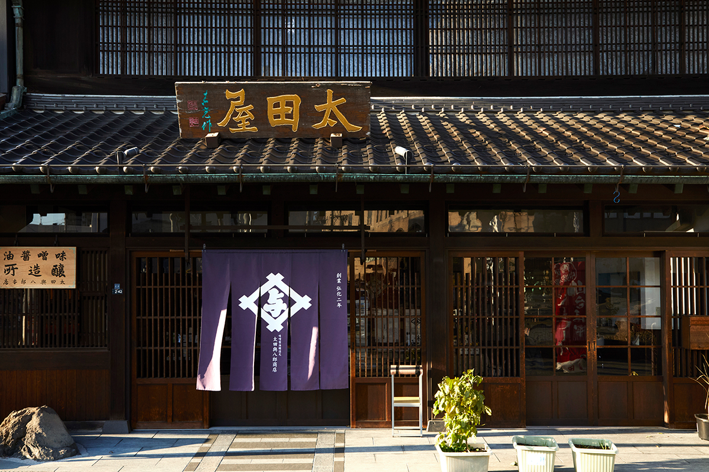
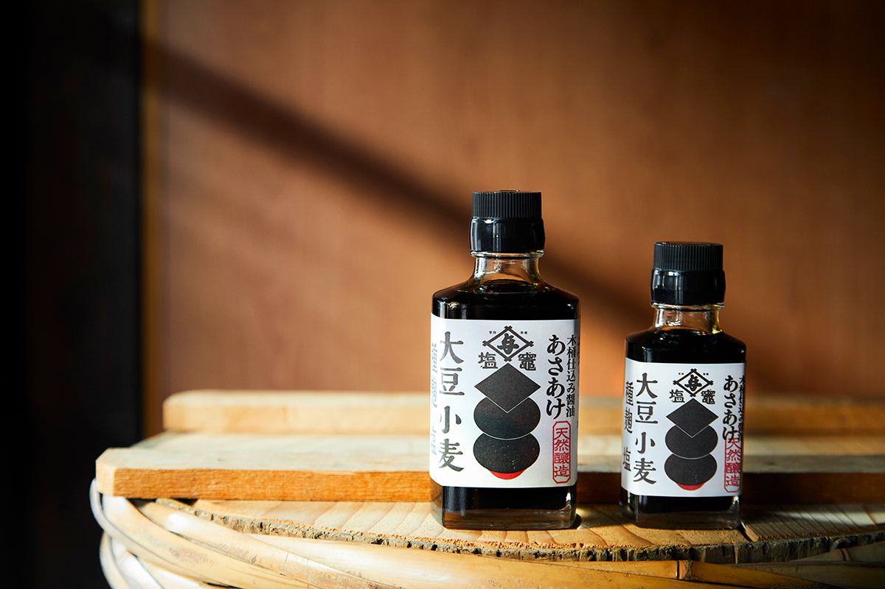
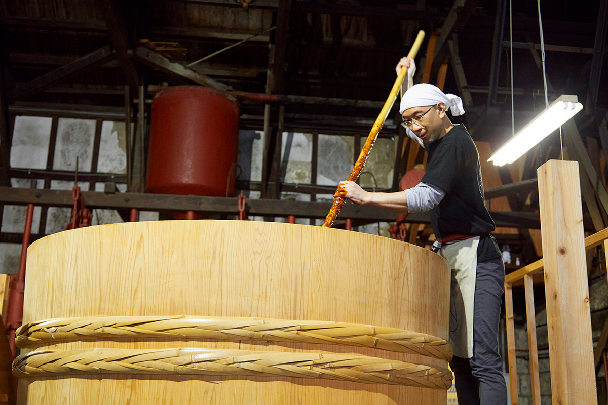
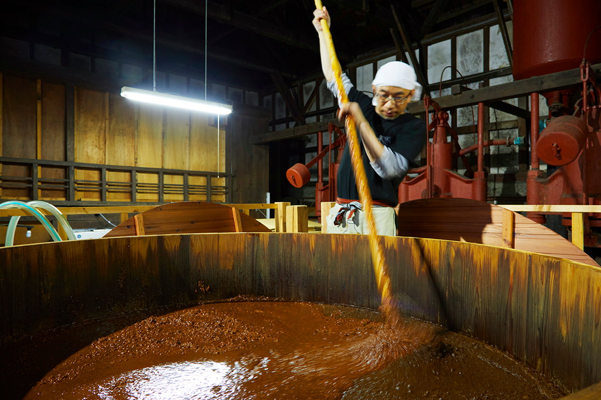
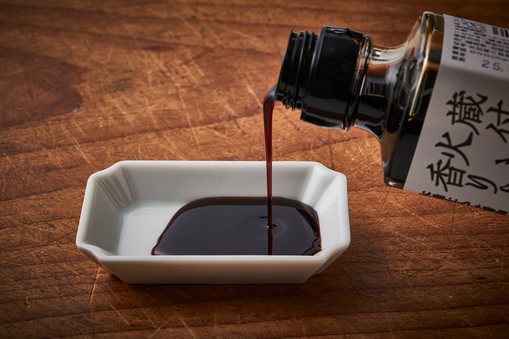
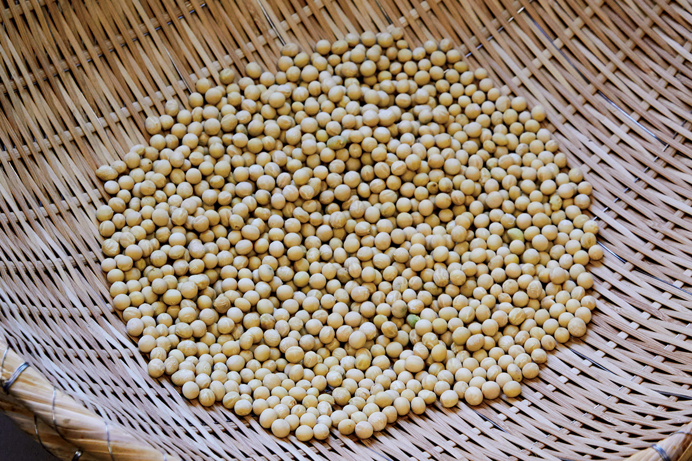
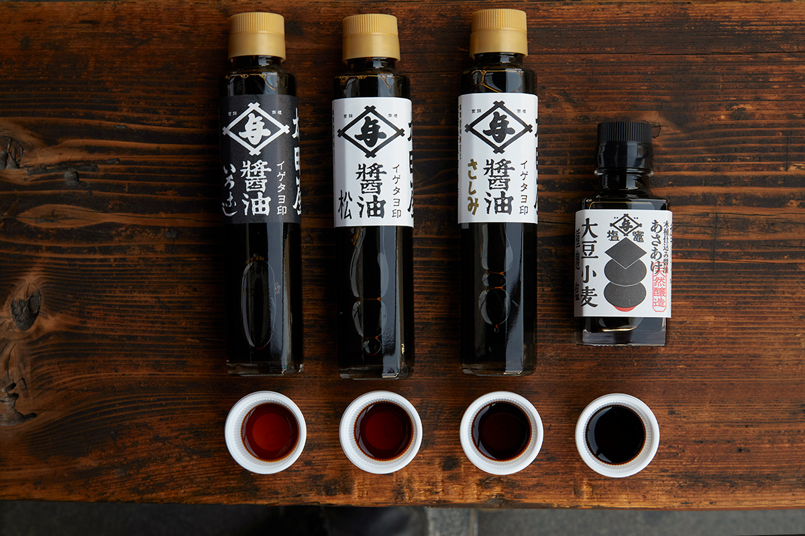
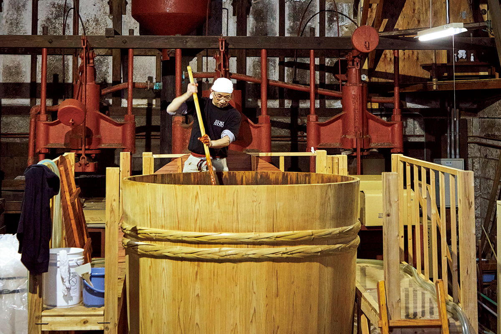
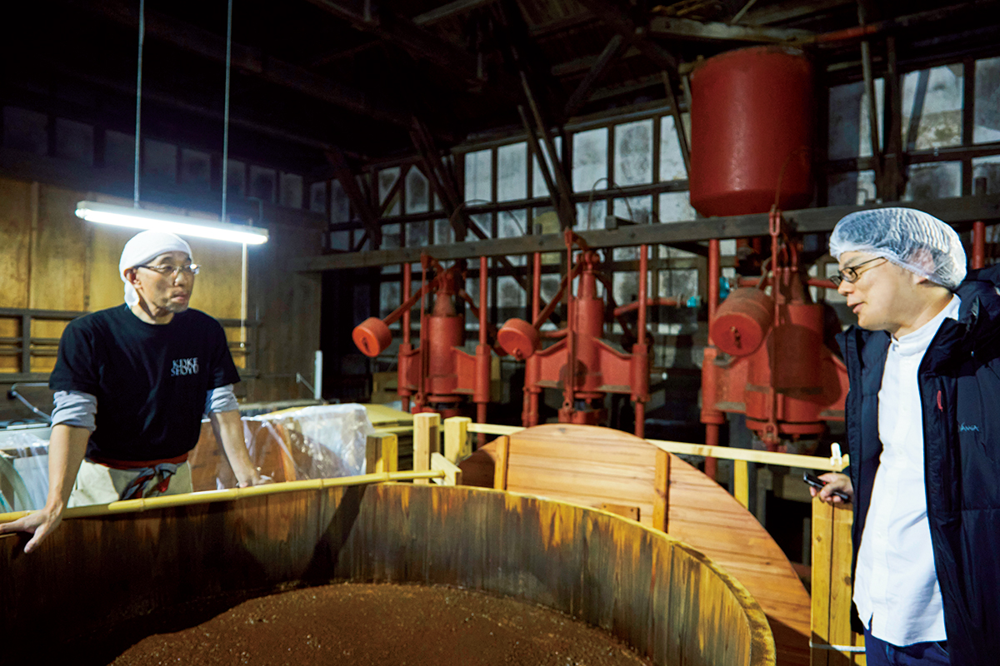
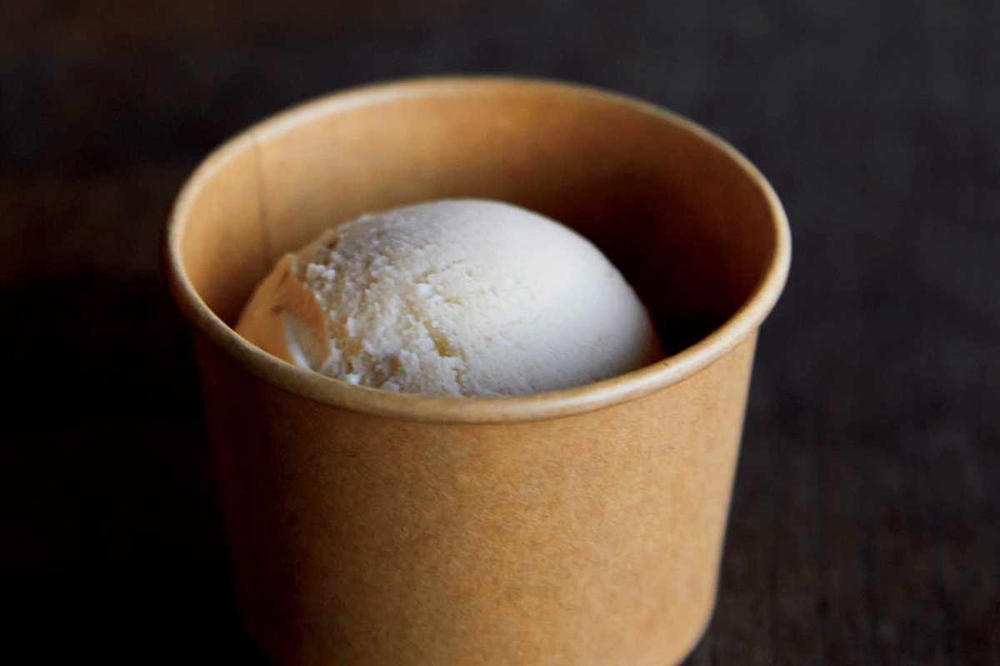

Префектура Мияги · Сиогама · еда
Соевый соус из деревянной бочки: как пивоварня в Сиогаме вернулась к старому способу

В Японии деревянные бочки дают лишь около процента всего соевого соуса. В портовой Сиогаме одна старая пивоварня поставила себе новую бочку из японского кедра и сварила в ней соус, который особенно хорош с местным тунцом.
Пивоварня
Магазин у ворот святилища
Сиогама лежит к востоку от Сендая, и в этом городе один из крупнейших рыбных портов Тохоку. В центре города стоит святилище Сиогама, а у его ворот работают магазин и цех «Ота Ёхатиро сётэн». Когда-то семья держала постоялый двор, в четвёртом поколении занялась пивоварением, и в городе её дело зовут просто «Ота-я».
На нынешнее место пивоварня переехала около 1889 года. Склад-пивоварню перестроили в 1925 году, магазин в 1929 году. Пивоварней руководит мастер, который вошёл в семью Ота после женитьбы.

В цеху пахнет соевым соусом. Во время землетрясения 2011 года сюда дошло цунами, но само здание устояло. Пол выложен кирпичом, под высоким потолком переплетаются столбы и балки, а посередине стоит одна деревянная бочка. В ней зреет соус «Асаакэ».
Ремесло
Тяжёлая работа с веслом

Мастер опускает в ещё новую бочку длинное весло, «кай», и начинает мешать.
«Это называется кайирэ. Когда соус бродит, внизу собирается жидкость, а сверху всплывает густая масса, поэтому её нужно перемешивать. Кондиционера в пивоварне, конечно, нет, так что работа тяжёлая. Зато в начале чувствуешь фруктовые запахи: клубнику, яблоко, что-то вроде арбуза. Когда сусло дозревает, этот запах утихает и становится уже запахом соевого соуса»
мастер пивоварни

История
Куда исчезли пивоварни
Соевый соус японцы знают с детства, но о самой отрасли знают немногие. По данным информационного центра соевого соуса, в 2023 году в Японии было 1035 производителей. В 1955 году их было 6000, к 1980 году осталось 2927, а в лучшие времена, по рассказам, могло быть и около 10 000.

Одна из причин упадка связана с законом 1960-х годов о модернизации малых предприятий. Государство хотело поднять их производительность, и пивоварни одного района объединялись в кооперативы и варили соус на общих заводах с новым оборудованием. Тогда это давало эффективность и хорошее качество. Но когда соевого соуса стали есть меньше, кооперативные заводы начали закрываться, а мелким производителям стало трудно отличаться от крупных компаний с дешёвым соусом. Так пивоварен становилось всё меньше.
К 2025 году три четверти всего соевого соуса выпускали крупные и средние компании, и вкус по стране всё больше выравнивается. «Ота Ёхатиро сётэн», как и многие другие, покупает у кооператива сырой соус, сама пастеризует, смешивает и продаёт его.

«Я вообще люблю делать вещи своими руками, и хотелось варить самим. После землетрясения захотелось начать всё сначала: а нельзя ли поставить соус в деревянной бочке?»
мастер пивоварни
Так пивоварня решила варить собственный соус, причём в бочке.
Бочка
Один процент соевого соуса
Исчезали не только производители, но и деревянные бочки. К 2025 году у них сложилась хорошая репутация, они напоминают о традиции, но в годы того закона их считали старьём, от которого лучше поскорее избавиться. Бочки неудобны: сверху они открыты, дерево впитывает влагу, и сусло легко пересыхает. В дереве живут разные микробы, поэтому брожение идёт дольше, а каждая бочка ведёт себя по-своему, и с ней нужно уметь работать.
По общенациональному исследованию бочек для соевого соуса, в стране их осталось около 4750. Отсюда можно прикинуть, что на соус из деревянных бочек приходится лишь 1–1,5% всего соевого соуса Японии.

Но бочки понемногу возвращаются: пивоварни снова заказывают новые бочки благодаря проекту по возрождению бочарного ремесла, который ведёт глава пивоварни «Ямароку сёю» с острова Сёдосима. «Ота Ёхатиро сётэн» одна из них: в феврале 2020 года с Сёдосимы привезли бочку, а в 2022 году появился «Асаакэ». Название означает бледно-алый цвет, которым соус светится в момент отжима.
Вкус
Соус для тунца

«Дрожжи, которые живут в пивоварне, и здешний климат дают свой особый вкус. Мы этого не добивались специально, но соус очень подходит к сасими из тунца, которым славится Сиогама»
мастер пивоварни
«Асаакэ» действительно не уступает кислинке тунца: он смягчает её резкость и подчёркивает вкус рыбы. Автор объясняет это тем, что воздух вокруг бочки здесь пахнет портом.
Соус из деревянных бочек часто сравнивают с вином: у каждой пивоварни свой аромат и вкус. Соус крупных компаний качественный и вкусный, но с бочковым соусом есть ещё удовольствие поиска и подбора к блюдам. Автор и сам приехал в Сиогаму, потому что нашёл «Асаакэ», пробуя разные бочковые соусы.

«Хотелось бы со временем поставить больше бочек. Интересно, как тогда изменится вкус»
мастер пивоварни
Рядом с мастером в цеху работает его сын: как и в других пивоварнях, ремесло уже переходит к следующему поколению.
Магазин
Мисо, джелато и амадзакэ
В магазине продают соевый соус и мисо пивоварни. Хорошо расходится и джелато из мисо, в котором чувствуется вкус сендайского мисо. Покупательница в магазине подсказала, что здешний амадзакэ, сладкий рисовый напиток, очень вкусный.

«Ота Ёхатиро сётэн»
- Адрес
- префектура Мияги, Сиогама, Миямати, 2-42
- Телефон
- +81 22-362-0035
- Часы работы
- 9:00–17:00
- Выходные
- воскресенье, праздничные дни
Фото: Кэнта Ёсидзава.